3 Select Candidate SNPs
3.1 Objective: Identify candidate SNPs by
- filtering those out of Hardy Weinberg Equilibrium
- selecting population diagnostic SNPs for genetic groups
- selecting snps with high minor allele frequencies
3.2 Read in Data
SNP Data from 02_genetic_assignment
genotypes <-readRDS(here::here("data","derived","genotypes"))Individual Data from 02_genetic_assignment
sample_data <-readRDS(here::here("data","derived","sample_data"))3.3 Format Data
3.3.1 Make genind object from 105K SNPs
gind <- df2genind(genotypes, ncode = 1, sep = "", NA.char = NA, ploidy = 2)3.3.2 Make a dataframe specifying genetic group and “metapop.”
genetic group: individual north florida (nfl), general florida (gfl), northern Gulf of Mexico group (ngom), or from the south Texas group (stx) based on k_means data,
metapop: individual from gulf (ngom or fl) or south texas
sample_data_groups <- sample_data %>%
mutate(k_group_name = case_when(
k_group == 1 ~ "stx",
k_group == 2 ~ "nfl",
k_group == 3 ~ "gfl",
k_group == 4 ~ "ngom")) %>%
mutate(mpop = case_when(
k_group == 1 ~ "stx",
k_group == 2 ~ "gulf",
k_group == 3 ~ "gulf",
k_group == 4 ~ "gulf"))3.3.3 Assign populations to genind object
#put strata in gind that has the names of individuals and their populations in the same order as individuals are listed in indNames(gind)
strata(gind) <- sample_data_groups %>%
select(Sample, k_group_name,mpop) %>%
.[match(indNames(gind), .$Sample),]#make pop for gind
setPop(gind) <- ~k_group_name## [1] "ngom" "ngom" "ngom" "ngom" "ngom" "ngom" "ngom" "nfl" "ngom" "gfl" "gfl" "gfl" "gfl" "gfl"The check was successful, seems populations appopriately assigned
3.3.4 Format data into the hierfstat format for analysis of heterozygosity and MAF
#if pop=NULL, pop assigned based on what is in the pop slot of the genind object
hgen<-genind2hierfstat(gind, pop=NULL)
b_stats <- basic.stats(hgen,diploid=TRUE,digits=4)# Heterozygosities per loci in each group
as_tibble(b_stats$Ho, rownames= NA) %>%
rownames_to_column()## # A tibble: 105,363 × 5
## rowname ngom nfl gfl stx
## <chr> <dbl> <dbl> <dbl> <dbl>
## 1 AX168593894 0 0 0.0147 0.387
## 2 AX168612286 0.165 0.182 0.224 0.0328
## 3 AX562727784 0.0324 0.125 0.132 0.0328
## 4 AX562727806 0.406 0.576 0.485 0.0645
## 5 AX562727827 0.157 0.0909 0.0294 0.113
## 6 AX562728138 0.437 0.469 0.554 0.361
## 7 AX562728433 0.439 0.394 0.368 0.113
## 8 AX562728724 0.539 0.546 0.368 0.0484
## 9 AX562728798 0.088 0.424 0.397 0
## 10 AX562728875 0.130 0.242 0.176 0.833
## # ℹ 105,353 more rowshist(b_stats$Ho[,1], main="stx")
hist(b_stats$Ho[,2], main="nfl")
hist(b_stats$Ho[,3], main="gfl")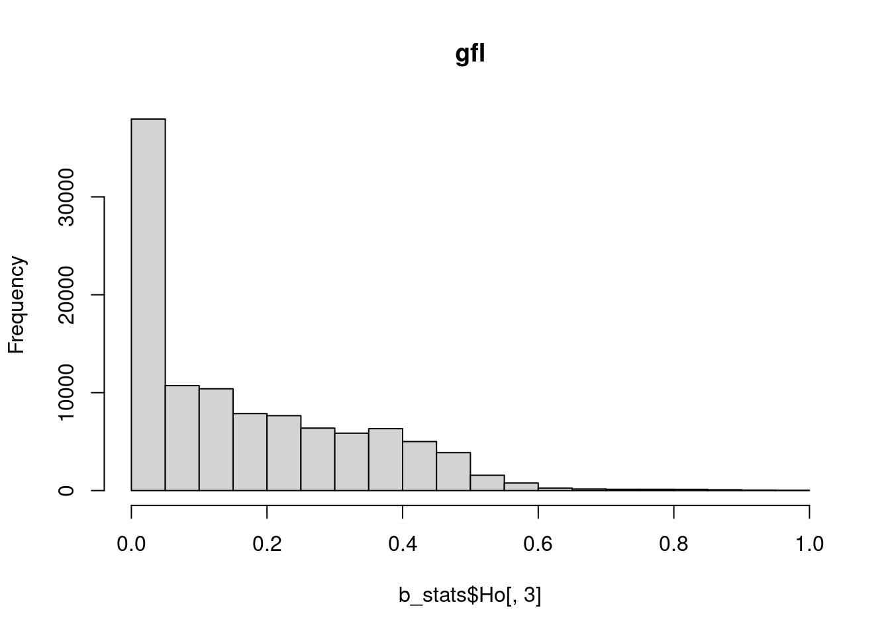
hist(b_stats$Ho[,4], main="ngom")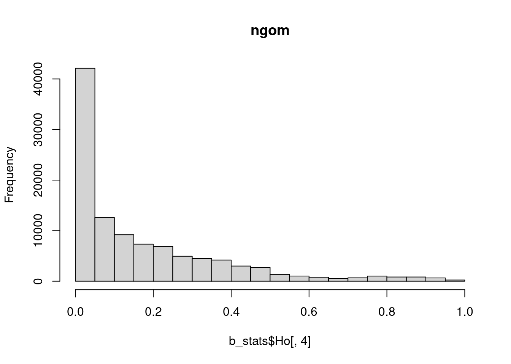
3.4 HWE filtering
3.4.1 Filtering out the loci with Ho > 0.5
0.5 is the maximum Hardy-Weinberg heterozygosity at a biallelic locus, so exclude loci in excess of 0.5 Ho (e.g, Keller et al. 2013)
Remove SNPs with Ho greater than 0.5 in any genetic group
#remove the loci names for those with Ho greater than 0.5
#the loci are taken from the $Ho specification in the hierfstat package
hiH_loci <- as.data.frame(b_stats$Ho) %>%
filter_all(any_vars(. > 0.5)) %>%
row.names(.)hgen2 <- hgen %>%
select(!all_of(hiH_loci))3.4.2 Re-analyze the data for heterozygosities
b_stats2 <- basic.stats(hgen2,diploid=TRUE,digits=4)# Heterozygosities per loci in each group
as_tibble(b_stats2$Ho, rownames= NA) %>%
rownames_to_column()## # A tibble: 91,310 × 5
## rowname ngom nfl gfl stx
## <chr> <dbl> <dbl> <dbl> <dbl>
## 1 AX168593894 0 0 0.0147 0.387
## 2 AX168612286 0.165 0.182 0.224 0.0328
## 3 AX562727784 0.0324 0.125 0.132 0.0328
## 4 AX562727827 0.157 0.0909 0.0294 0.113
## 5 AX562728433 0.439 0.394 0.368 0.113
## 6 AX562728798 0.088 0.424 0.397 0
## 7 AX562729352 0.0323 0 0.0147 0
## 8 AX562729356 0.444 0.273 0.235 0.131
## 9 AX562729364 0.335 0.375 0.382 0.0484
## 10 AX562729453 0.380 0.281 0.403 0.117
## # ℹ 91,300 more rowshist(b_stats2$Ho[,1], main="stx")
hist(b_stats2$Ho[,2], main="nfl")
hist(b_stats2$Ho[,3], main="gfl")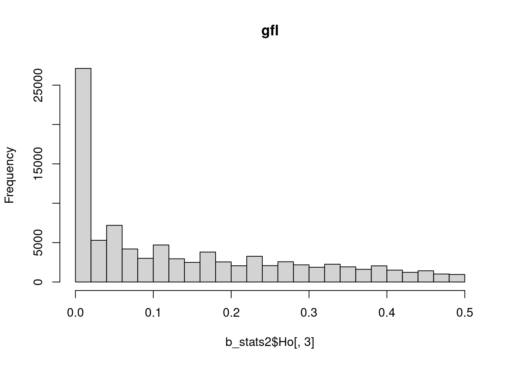
hist(b_stats2$Ho[,4], main="ngom")
3.4.3 Make genind object without the loci that have heterozygosities over 0.5
gind_0.5<-genind.rem.loci(gind,hiH_loci)3.4.4 Make genotypes data frame without the loci that have heterozygosities over 0.5
genotypes_0.5 <- genotypes %>%
select(! all_of(hiH_loci))3.4.5 HW test
Much of code followed from website: https://grunwaldlab.github.io/Population_Genetics_in_R/Locus_Stats.html
Start with a genind object that only contains the 94391 loci that pass the initial HWE test – gind_0.5
#eval set to false because takes so long
#WARNING: this chunk takes a long time
#hardy weinberg test on each pop seperately
#seppop from adegenet
#hw.test from pegas package
hwe.pop <- seppop(gind_0.5) %>%
lapply(hw.test, B=0)
#save in case don't want to re-run the above chunk
saveRDS(hwe.pop, file = here::here("data","derived","hwepop"))#load file so as to save time producing it
hwe.pop <- readRDS(file = here::here("data","derived","hwepop"))3.4.5.1 Exmaine matrix of each loci and p values
#matrix of each loci and p values
hwe.mat <- sapply(hwe.pop, "[", i = TRUE, j = 3)
head(hwe.mat)## ngom nfl gfl stx
## AX168593894 1.000000000 1.0000000 0.95129307 2.236453e-01
## AX168612286 0.001366327 0.3998576 0.21052579 3.932973e-07
## AX562727784 0.808728076 0.7060817 0.05312365 8.964313e-01
## AX562727827 0.126460984 0.7844300 0.90204551 6.375733e-01
## AX562728433 0.331596110 0.8218619 0.71336337 6.375733e-01
## AX562728798 0.471347746 0.3732473 0.20724211 1.000000e+00alpha <- 0.05
hmmat <- hwe.mat
hmmat[hmmat > alpha] <- 1
levelplot(hmmat,aspect="fill")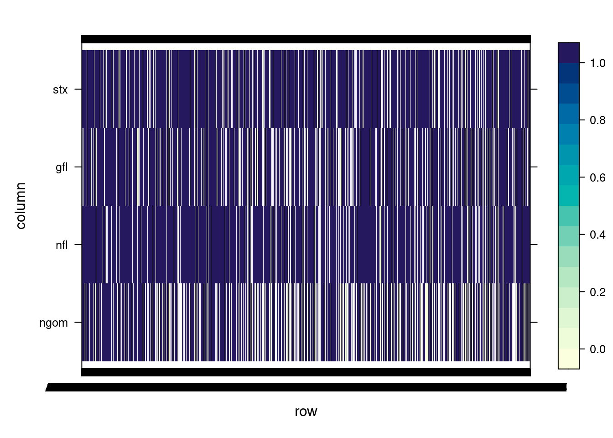
Blue denotes alleles that have p > 0.05 from hw.test (cannot be rejected as out of HWE), purple those with p < 0.05 (can be rejected as out of HWE)
3.4.6 Select loci that are fail HWE test (p < 0.05)
# HWE per loci in each group
as_tibble(hmmat, rownames= NA) %>%
rownames_to_column()## # A tibble: 91,310 × 5
## rowname ngom nfl gfl stx
## <chr> <dbl> <dbl> <dbl> <dbl>
## 1 AX168593894 1 1 1 1
## 2 AX168612286 0.00137 1 1 0.000000393
## 3 AX562727784 1 1 1 1
## 4 AX562727827 1 1 1 1
## 5 AX562728433 1 1 1 1
## 6 AX562728798 1 1 1 1
## 7 AX562729352 1 1 1 1
## 8 AX562729356 1 1 1 1
## 9 AX562729364 1 1 1 1
## 10 AX562729453 1 1 1 1
## # ℹ 91,300 more rows#select all loci here that are not in HW
out_hw<-as_tibble(hmmat,rownames=NA) %>%
rownames_to_column() %>%
rowwise() %>%
mutate(pass = sum(c(ngom,gfl,nfl,stx))) %>%
filter(pass < 4) %>% # if all pass HW test, then sum of last column, "pass", is 3
select(rowname) %>%
.$rowname3.5 Select population diagnostic loci
3.5.1 South Texas vs. Gulf
#make hierfstat object for stx vs. gulf (pop=mpop)
setPop(gind_0.5_hw) <- ~mpop
hgen3 <- genind2hierfstat(gind_0.5_hw, pop= NULL)#calculate basic pop gen stats (clusters)
b_stats <- basic.stats(hgen3,diploid=TRUE,digits=4)#histogram of FST for all loci
hist(b_stats$perloc$Fst, main="Fst", xlab="loci")
Range of Fst
range(b_stats$perloc$Fst,na.rm=TRUE)## [1] -0.0033 0.9811Loci with Fst >= 0.9
sum(b_stats$perloc$Fst >= 0.9,na.rm=TRUE)## [1] 237PCAs_High_Fsts
#order SNPs by Fst
bstats_ord <- b_stats$perloc[order(b_stats$perloc$Fst, decreasing = TRUE),]
#select SNPs to drop based on Fst
Fst500_drop <- bstats_ord %>%
slice(501:nrow(.)) %>%
row.names(.)
Fst200_drop <- bstats_ord %>%
slice(201:nrow(.)) %>%
row.names(.)
Fst100_drop <- bstats_ord %>%
slice(101:nrow(.)) %>%
row.names(.)
Fst50_drop <- bstats_ord %>%
slice(51:nrow(.)) %>%
row.names(.)
Fst25_drop <- bstats_ord %>%
slice(26:nrow(.)) %>%
row.names(.)
#manipulate genind object (gen_groups_Ho_Hw) to only include the SNPs with highest Fsts
genobj <- gind_0.5_hw
hiF_500 <- genind.rem.loci(genobj,Fst500_drop)
hiF_200 <- genind.rem.loci(genobj,Fst200_drop)
hiF_100 <- genind.rem.loci(genobj,Fst100_drop)
hiF_50 <- genind.rem.loci(genobj,Fst50_drop)
hiF_25 <- genind.rem.loci(genobj,Fst25_drop)x1 <- scaleGen(hiF_500, NA.method = "mean")
x2 <- scaleGen(hiF_200, NA.method = "mean")
x3 <- scaleGen(hiF_100, NA.method = "mean")
x4 <- scaleGen(hiF_50, NA.method = "mean")
x5 <- scaleGen(hiF_25, NA.method = "mean")
pca1 <- dudi.pca(x1,cent=FALSE,scale=FALSE,scannf=FALSE,nf=4)
pca2 <- dudi.pca(x2,cent=FALSE,scale=FALSE,scannf=FALSE,nf=4)
pca3 <- dudi.pca(x3,cent=FALSE,scale=FALSE,scannf=FALSE,nf=4)
pca4 <- dudi.pca(x4,cent=FALSE,scale=FALSE,scannf=FALSE,nf=4)
pca5 <- dudi.pca(x5,cent=FALSE,scale=FALSE,scannf=FALSE,nf=4)
eig1<-barplot(pca1$eig[1:50],main="PCA eigenvalues500", col=heat.colors(50))eig2<-barplot(pca2$eig[1:50],main="PCA eigenvalues200", col=heat.colors(50))eig3<-barplot(pca3$eig[1:50],main="PCA eigenvalues100", col=heat.colors(50))eig4<-barplot(pca4$eig[1:50],main="PCA eigenvalues50", col=heat.colors(50))eig5<-barplot(pca5$eig[1:50],main="PCA eigenvalues25", col=heat.colors(50))PCAs
#500 SNPs
PC_ind <- PC.ind(pca1)
eig <- eigenvalues(pca1)
#rename "Sample_ID" in PC_ind to "INDV"
PC_ind <- PC_ind %>% rename(Sample=Sample_ID)
PC_ind <- merge(PC_ind,sample_data_groups,by = "Sample")
pc500 <- ggplot(PC_ind, aes(x = Axis1, y = Axis2, color = k_group_name)) +
geom_point(alpha = 0.75, size = 2) +
labs(x = paste("PC1:", round(eig[1, 3], digits = 3), "%"),
y = paste("PC2:", round(eig[2, 3], digits = 3), "%"))+
ggtitle("500 SNPs") +
scale_color_hue(direction = -1)
pc500
#200 SNPs
PC_ind <- PC.ind(pca2)
eig <- eigenvalues(pca2)
#rename "Sample_ID" in PC_ind to "INDV"
PC_ind <- PC_ind %>% rename(Sample=Sample_ID)
PC_ind <- merge(PC_ind,sample_data_groups,by = "Sample") #might need to change the name of the column listing individuals in PC_ind to match sample_info to make these merge properly
pc200 <- ggplot(PC_ind, aes(x = Axis1, y = Axis2, color = k_group_name)) +
geom_point(alpha = 0.75, size = 2) +
labs(x = paste("PC1:", round(eig[1, 3], digits = 3), "%"),
y = paste("PC2:", round(eig[2, 3], digits = 3), "%"))+
ggtitle("200 SNPs") +
scale_color_hue(direction = -1)
pc200
#100 SNPs
PC_ind <- PC.ind(pca3)
eig <- eigenvalues(pca3)
#rename "Sample_ID" in PC_ind to "INDV"
PC_ind <- PC_ind %>% rename(Sample=Sample_ID)
PC_ind <- merge(PC_ind,sample_data_groups,by = "Sample") #might need to change the name of the column listing individuals in PC_ind to match sample_info to make these merge properly
pc100 <- ggplot(PC_ind, aes(x = Axis1, y = Axis2, color = k_group_name)) +
geom_point(alpha = 0.75, size = 2) +
labs(x = paste("PC1:", round(eig[1, 3], digits = 3), "%"),
y = paste("PC2:", round(eig[2, 3], digits = 3), "%"))+
ggtitle("100 SNPs") +
scale_color_hue(direction = -1)
pc100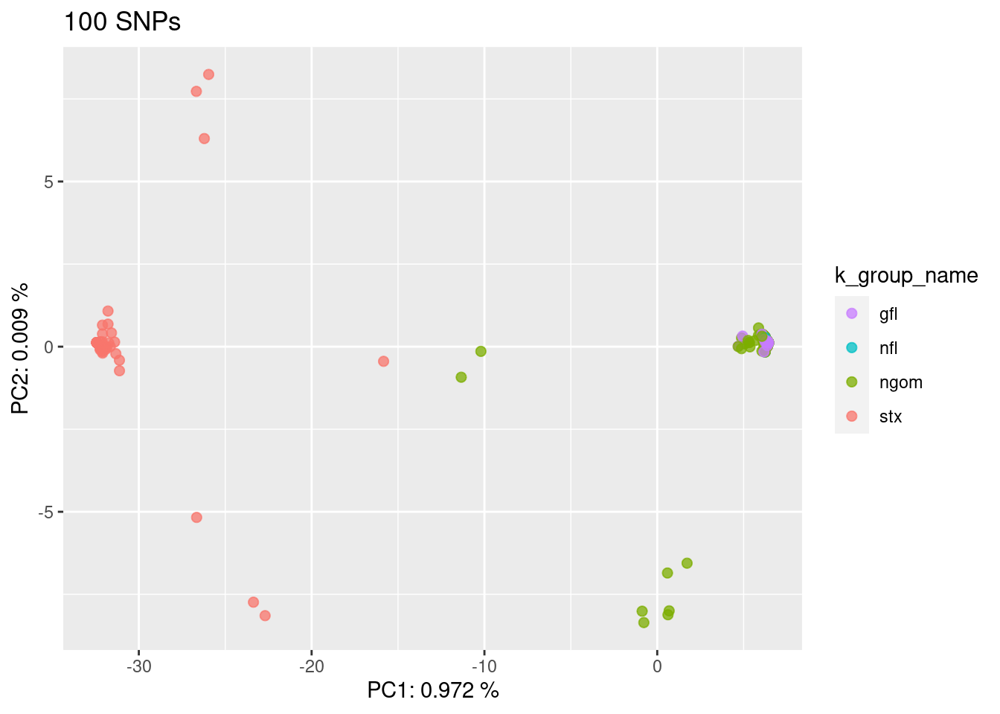
#50 SNPs
PC_ind <- PC.ind(pca4)
eig <- eigenvalues(pca4)
#rename "Sample_ID" in PC_ind to "INDV"
PC_ind <- PC_ind %>% rename(Sample=Sample_ID)
PC_ind <- merge(PC_ind,sample_data_groups,by = "Sample") #might need to change the name of the column listing individuals in PC_ind to match sample_info to make these merge properly
pc50 <- ggplot(PC_ind, aes(x = Axis1, y = Axis2, color = k_group_name)) +
geom_point(alpha = 0.75, size = 2) +
labs(x = paste("PC1:", round(eig[1, 3], digits = 3), "%"),
y = paste("PC2:", round(eig[2, 3], digits = 3), "%"))+
ggtitle("50 SNPs") +
scale_color_hue(direction = -1)
pc50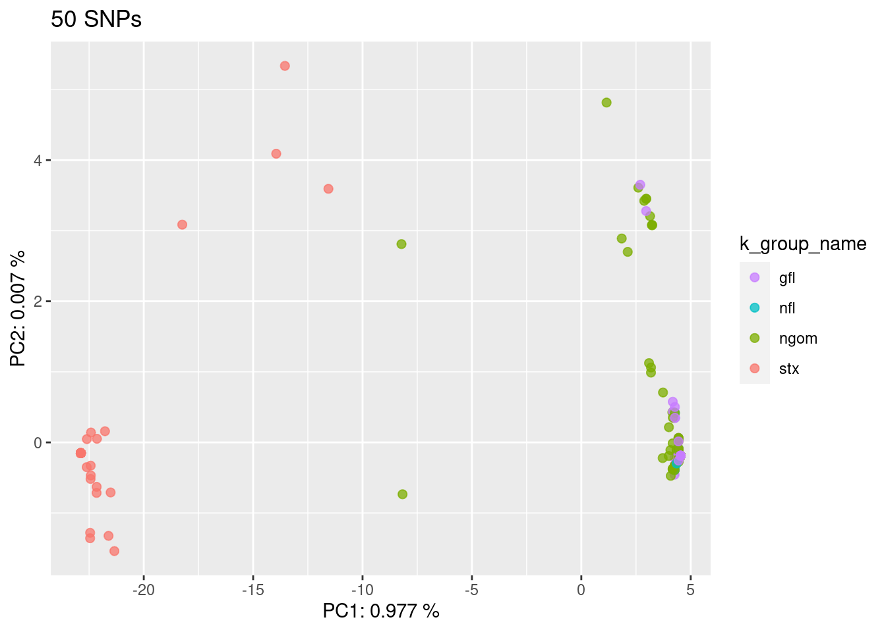
#25 SNPs
PC_ind <- PC.ind(pca5)
eig <- eigenvalues(pca5)
#rename "Sample_ID" in PC_ind to "INDV"
PC_ind <- PC_ind %>% rename(Sample=Sample_ID)
PC_ind <- merge(PC_ind,sample_data_groups,by = "Sample") #might need to change the name of the column listing individuals in PC_ind to match sample_info to make these merge properly
pc25 <- ggplot(PC_ind, aes(x = Axis1, y = Axis2, color = k_group_name)) +
geom_point(alpha = 0.75, size = 2) +
labs(x = paste("PC1:", round(eig[1, 3], digits = 3), "%"),
y = paste("PC2:", round(eig[2, 3], digits = 3), "%"))+
ggtitle("25 SNPs") +
scale_color_hue(direction = -1)
pc25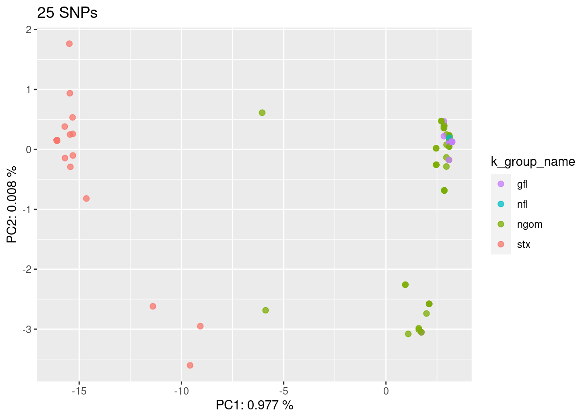
3.6 nGOM vs. FL
Filter out individuals from stx
genotypes_gulf <- genotypes_0.5_hw %>%
filter(!row.names(.) %in%
sample_data_groups$Sample[sample_data_groups$k_group_name == "stx"],)
gind_0.5_hw_gulf <- df2genind(genotypes_gulf, ncode = 1, sep = "", NA.char = NA, ploidy = 2)#put strata in gind that has the names of individuals and their populations in the same order as individuals are listed in indNames(gind)
strata(gind_0.5_hw_gulf) <- sample_data_groups %>%
select(Sample, k_group_name,mpop) %>%
.[match(indNames(gind_0.5_hw_gulf), .$Sample),]#make pop for gind
setPop(gind_0.5_hw_gulf) <- ~k_group_namehgen4 <- genind2hierfstat(gind_0.5_hw_gulf, pop= NULL)Examine fsts
#calculate basic pop gen stats (clusters)
b_stats <- basic.stats(hgen4,diploid=TRUE,digits=4)#histogram of FST for all loci
hist(b_stats$perloc$Fst, main="Fst", xlab="loci")
Range of Fst
range(b_stats$perloc$Fst,na.rm=TRUE)## [1] -0.0068 0.7363Loci with Fst >= 0.7
sum(b_stats$perloc$Fst >= 0.7,na.rm=TRUE)## [1] 6PCAs_High_Fsts
#order SNPs by Fst
bstats_ord <- b_stats$perloc[order(b_stats$perloc$Fst, decreasing = TRUE),]
#select SNPs to drop based on Fst
Fst500_drop <- bstats_ord %>%
slice(501:nrow(.)) %>%
row.names(.)
Fst200_drop <- bstats_ord %>%
slice(201:nrow(.)) %>%
row.names(.)
Fst100_drop <- bstats_ord %>%
slice(101:nrow(.)) %>%
row.names(.)
Fst50_drop <- bstats_ord %>%
slice(51:nrow(.)) %>%
row.names(.)
Fst25_drop <- bstats_ord %>%
slice(26:nrow(.)) %>%
row.names(.)
#manipulate genind object (gen_groups_Ho_Hw) to only include the SNPs with highest Fsts
genobj <- gind_0.5_hw_gulf
hiF_500 <- genind.rem.loci(genobj,Fst500_drop)
hiF_200 <- genind.rem.loci(genobj,Fst200_drop)
hiF_100 <- genind.rem.loci(genobj,Fst100_drop)
hiF_50 <- genind.rem.loci(genobj,Fst50_drop)
hiF_25 <- genind.rem.loci(genobj,Fst25_drop)x1 <- scaleGen(hiF_500, NA.method = "mean")
x2 <- scaleGen(hiF_200, NA.method = "mean")
x3 <- scaleGen(hiF_100, NA.method = "mean")
x4 <- scaleGen(hiF_50, NA.method = "mean")
x5 <- scaleGen(hiF_25, NA.method = "mean")
pca1 <- dudi.pca(x1,cent=FALSE,scale=FALSE,scannf=FALSE,nf=4)
pca2 <- dudi.pca(x2,cent=FALSE,scale=FALSE,scannf=FALSE,nf=4)
pca3 <- dudi.pca(x3,cent=FALSE,scale=FALSE,scannf=FALSE,nf=4)
pca4 <- dudi.pca(x4,cent=FALSE,scale=FALSE,scannf=FALSE,nf=4)
pca5 <- dudi.pca(x5,cent=FALSE,scale=FALSE,scannf=FALSE,nf=4)
eig1<-barplot(pca1$eig[1:50],main="PCA eigenvalues500", col=heat.colors(50))eig2<-barplot(pca2$eig[1:50],main="PCA eigenvalues200", col=heat.colors(50))eig3<-barplot(pca3$eig[1:50],main="PCA eigenvalues100", col=heat.colors(50))eig4<-barplot(pca4$eig[1:50],main="PCA eigenvalues50", col=heat.colors(50))eig5<-barplot(pca5$eig[1:50],main="PCA eigenvalues25", col=heat.colors(50))PCAs
#500 SNPs
PC_ind <- PC.ind(pca1)
eig <- eigenvalues(pca1)
#rename "Sample_ID" in PC_ind to "INDV"
PC_ind <- PC_ind %>% rename(Sample=Sample_ID)
PC_ind <- merge(PC_ind,sample_data_groups,by = "Sample")
pc500 <- ggplot(PC_ind, aes(x = Axis1, y = Axis2, color = k_group_name)) +
geom_point(alpha = 0.75, size = 2) +
labs(x = paste("PC1:", round(eig[1, 3], digits = 3), "%"),
y = paste("PC2:", round(eig[2, 3], digits = 3), "%"))+
ggtitle("500 SNPs") +
scale_color_hue(direction = -1)
pc500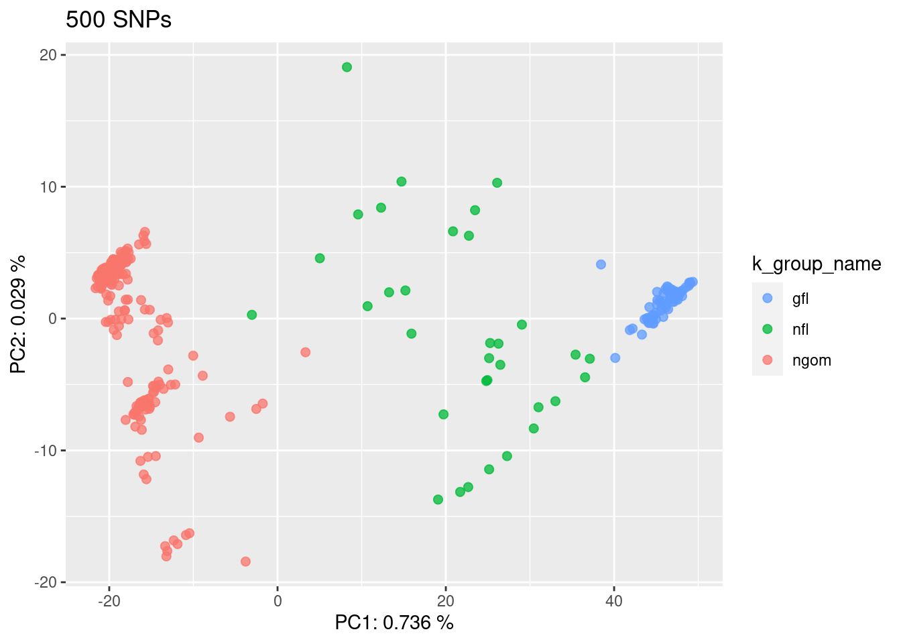
#200 SNPs
PC_ind <- PC.ind(pca2)
eig <- eigenvalues(pca2)
#rename "Sample_ID" in PC_ind to "INDV"
PC_ind <- PC_ind %>% rename(Sample=Sample_ID)
PC_ind <- merge(PC_ind,sample_data_groups,by = "Sample") #might need to change the name of the column listing individuals in PC_ind to match sample_info to make these merge properly
pc200 <- ggplot(PC_ind, aes(x = Axis1, y = Axis2, color = k_group_name)) +
geom_point(alpha = 0.75, size = 2) +
labs(x = paste("PC1:", round(eig[1, 3], digits = 3), "%"),
y = paste("PC2:", round(eig[2, 3], digits = 3), "%"))+
ggtitle("200 SNPs") +
scale_color_hue(direction = -1)
pc200
#100 SNPs
PC_ind <- PC.ind(pca3)
eig <- eigenvalues(pca3)
#rename "Sample_ID" in PC_ind to "INDV"
PC_ind <- PC_ind %>% rename(Sample=Sample_ID)
PC_ind <- merge(PC_ind,sample_data_groups,by = "Sample") #might need to change the name of the column listing individuals in PC_ind to match sample_info to make these merge properly
pc100 <- ggplot(PC_ind, aes(x = Axis1, y = Axis2, color = k_group_name)) +
geom_point(alpha = 0.75, size = 2) +
labs(x = paste("PC1:", round(eig[1, 3], digits = 3), "%"),
y = paste("PC2:", round(eig[2, 3], digits = 3), "%"))+
ggtitle("100 SNPs") +
scale_color_hue(direction = -1)
pc100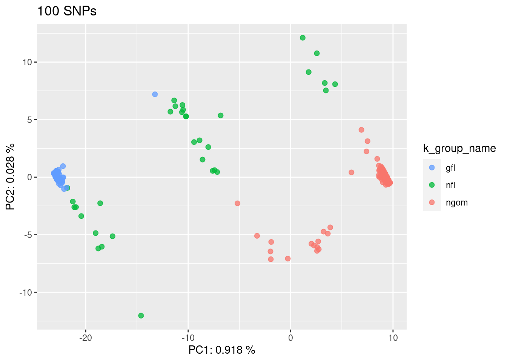
#50 SNPs
PC_ind <- PC.ind(pca4)
eig <- eigenvalues(pca4)
#rename "Sample_ID" in PC_ind to "INDV"
PC_ind <- PC_ind %>% rename(Sample=Sample_ID)
PC_ind <- merge(PC_ind,sample_data_groups,by = "Sample") #might need to change the name of the column listing individuals in PC_ind to match sample_info to make these merge properly
pc50 <- ggplot(PC_ind, aes(x = Axis1, y = Axis2, color = k_group_name)) +
geom_point(alpha = 0.75, size = 2) +
labs(x = paste("PC1:", round(eig[1, 3], digits = 3), "%"),
y = paste("PC2:", round(eig[2, 3], digits = 3), "%"))+
ggtitle("50 SNPs") +
scale_color_hue(direction = -1)
pc50
#25 SNPs
PC_ind <- PC.ind(pca5)
eig <- eigenvalues(pca5)
#rename "Sample_ID" in PC_ind to "INDV"
PC_ind <- PC_ind %>% rename(Sample=Sample_ID)
PC_ind <- merge(PC_ind,sample_data_groups,by = "Sample") #might need to change the name of the column listing individuals in PC_ind to match sample_info to make these merge properly
pc25 <- ggplot(PC_ind, aes(x = Axis1, y = Axis2, color = k_group_name)) +
geom_point(alpha = 0.75, size = 2) +
labs(x = paste("PC1:", round(eig[1, 3], digits = 3), "%"),
y = paste("PC2:", round(eig[2, 3], digits = 3), "%"))+
ggtitle("25 SNPs") +
scale_color_hue(direction = -1)
pc25
3.7 MAF
Select loci with highest MAF across populations
3.7.1 Calculate Minor Allele Frequency for each locus in each genetic group
# calculate maf
maf_ngom <- as.data.frame(minorAllele(gind_0.5_hw[gind_0.5_hw@strata$k_group_name == "ngom",]))
maf_gfl <- as.data.frame(minorAllele(gind_0.5_hw[gind_0.5_hw@strata$k_group_name == "gfl",]))
maf_nfl <- as.data.frame(minorAllele(gind_0.5_hw[gind_0.5_hw@strata$k_group_name == "nfl",]))
maf_stx <- as.data.frame(minorAllele(gind_0.5_hw[gind_0.5_hw@strata$k_group_name == "stx",]))#change column names
colnames(maf_ngom)[1] <- "frq"
maf_ngom$probeset_id <- rownames(maf_ngom)
colnames(maf_gfl)[1] <- "frq"
maf_gfl$probeset_id <- rownames(maf_gfl)
colnames(maf_nfl)[1] <- "frq"
maf_nfl$probeset_id <- rownames(maf_nfl)
colnames(maf_stx)[1] <- "frq"
maf_stx$probeset_id <- rownames(maf_stx)hist(maf_ngom$frq,main ="MAF ngom",xlab ="loci")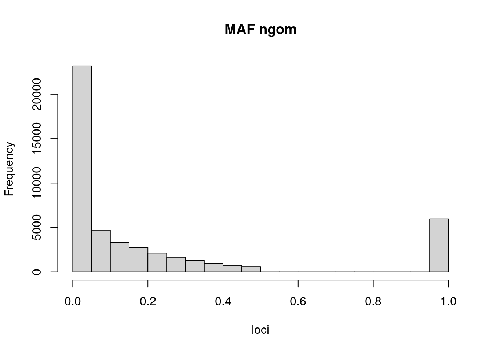
hist(maf_gfl$frq,main ="MAF gfl",xlab ="loci")
hist(maf_nfl$frq,main ="MAF nfl",xlab ="loci")
hist(maf_stx$frq, main ="MAF stx", xlab = "loci")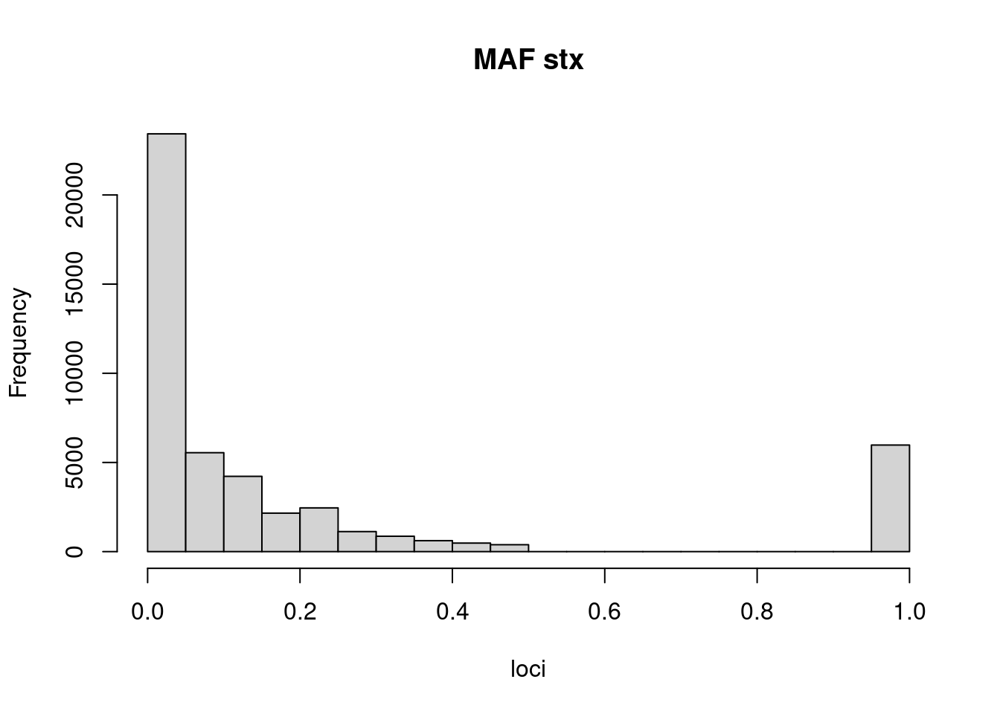
3.7.2 Re-calculate after removing loci with MAF of 1
#remove the maf frq of 1
maf_ngom <- maf_ngom[!maf_ngom$frq==1,]
maf_gfl <- maf_gfl[!maf_gfl$frq==1,]
maf_nfl <- maf_nfl[!maf_nfl$frq==1,]
maf_stx <- maf_stx[!maf_stx$frq==1,]hist(maf_ngom$frq,main ="MAF ngom",xlab ="loci")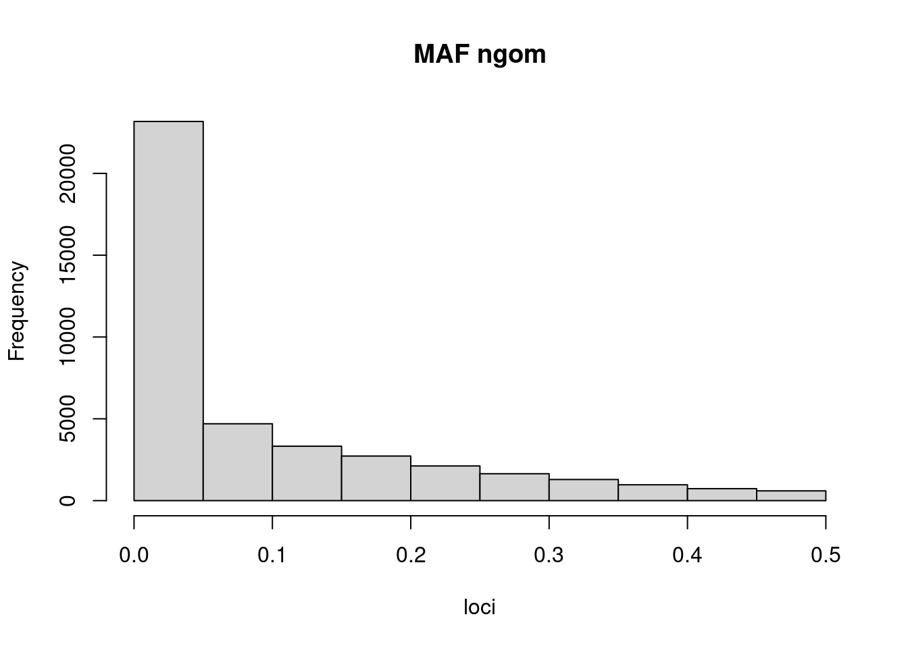
hist(maf_gfl$frq,main ="MAF gfl",xlab ="loci")
hist(maf_nfl$frq,main ="MAF nfl",xlab ="loci")
hist(maf_stx$frq, main ="MAF stx", xlab = "loci")
3.7.3 Identify loci with high MAF in all groups
nfl_frq <- arrange(maf_nfl, probeset_id) %>%
rename(nfl_probe = probeset_id, nfl_frq = frq)
gfl_frq <- arrange(maf_gfl, probeset_id) %>%
rename(gfl_probe = probeset_id, gfl_frq = frq)
ngom_frq <- arrange(maf_ngom, probeset_id) %>%
rename(ngom_probe = probeset_id, ngom_frq = frq)
stx_frq <- arrange(maf_stx, probeset_id) %>%
rename(stx_probe = probeset_id, stx_frq = frq)
MAF_groups <- bind_cols(nfl_frq,gfl_frq,ngom_frq,stx_frq)Check that data is in order
#check that probes are in the right order
MAF_groups %>% mutate(ngom_stx_pr = if_else(ngom_probe == stx_probe, 1, 0)) %>%
filter(ngom_stx_pr == 0)
MAF_groups %>% mutate(nfl_stx_pr = if_else(nfl_probe == stx_probe, 1, 0)) %>%
filter(nfl_stx_pr == 0)
MAF_groups %>% mutate(nfl_gfl_pr = if_else(nfl_probe == gfl_probe, 1, 0)) %>%
filter(nfl_gfl_pr == 0)Select and exmaine histograms of loci
- Selecting greater than 0.05 for gfl, nfl, and ngom and greater than 0.03 for stx
MAF_groups <- bind_cols(gfl_frq,nfl_frq,ngom_frq,stx_frq)
MAF_groups_filt <- MAF_groups %>%
filter(gfl_frq > 0.05, nfl_frq > 0.05, ngom_frq > 0.05, stx_frq > 0.03)
hist(MAF_groups_filt$nfl_frq,main = "MAF NFL Filtered", xlab="loci")
hist(MAF_groups_filt$gfl_frq,main = "MAF GFL Filtered", xlab="loci")
hist(MAF_groups_filt$ngom_frq,main = "MAF ngom Filtered", xlab="loci")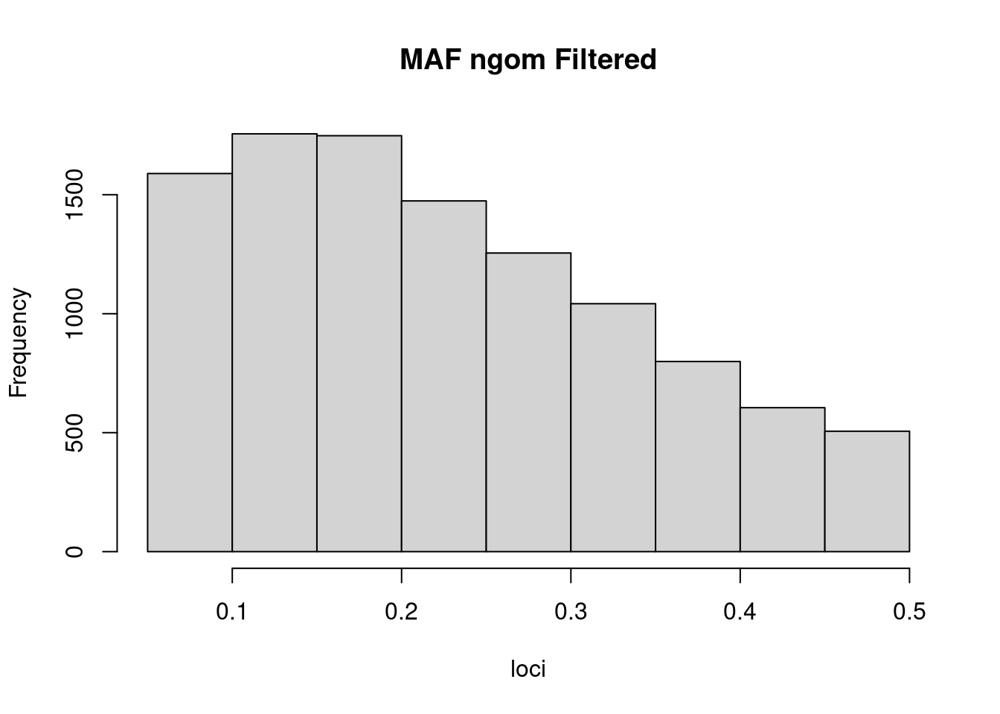
hist(MAF_groups_filt$stx_frq,main = "MAF stx Filtered", xlab="loci")
nrow(MAF_groups_filt)## [1] 10774Result is 10,774 candidate loci
3.8 Save files
#loci and their maf for each genetic group
saveRDS(nfl_frq, file = here::here("data","derived","nfl_frq"))
saveRDS(gfl_frq, file = here::here("data","derived","gfl_frq"))
saveRDS(ngom_frq, file = here::here("data","derived","ngom_frq"))
saveRDS(stx_frq, file = here::here("data","derived","stx_frq"))#genotypes as columns, rows as individuals, filtered out for HE and HWE
saveRDS(genotypes_0.5_hw,file = here::here("data","derived","genotypes_f_he_hw"))#25 SNPS with high FST for stx vs. gulf to be included in panel
saveRDS(stxvgulf_25, file = here::here("data","derived","stxvgulf_25"))#25 SNPS for florida v gulf (highest FST)
saveRDS(flvngom_25, file = here::here("data","derived","flvngom_25"))#11496 SNPs with greater than .10 MAF for nfl, gfl, nGOM and greater than .02 MAF for stx
saveRDS(MAF_groups_filt, file = here::here("data","derived","MAF_SNPs"))